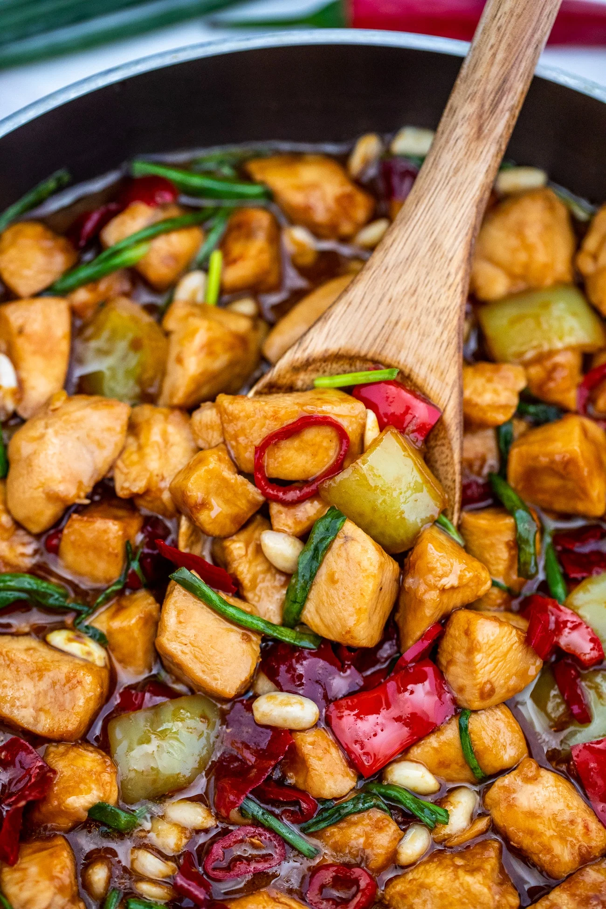
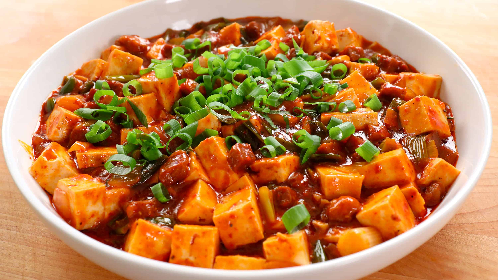
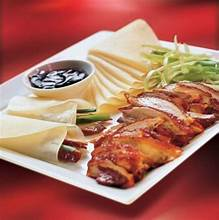

Kung Pao Chicken
Ingredients:
400g boneless, skinless chicken breasts (cut into bite-sized pieces)
Soy sauce, Shaoxing wine (or dry sherry), cornstarch
Vegetable oil
Dried red chilies, garlic, ginger
Roasted peanuts
Green onions
Salt
For the sauce:
Soy sauce, hoisin sauce, rice vinegar, sugar, sesame oil
Recipe:
Marinate chicken in soy sauce, wine, and cornstarch.
Stir-fry dried red chilies in hot oil.
Add chicken, cook until browned.
Add garlic, ginger, stir.
Pour in sauce, mix with chicken.
Add peanuts, toss.
Cook until sauce thickens.
Season with salt.
Garnish with green onions.
Serve with rice.
Mapo Tofu
Ingredients:
400g soft tofu
150g ground pork (optional)
Vegetable oil
Doubanjiang (broad bean paste)
Garlic, ginger, green onions
Fermented black beans (optional)
Soy sauce, sugar
Chicken or vegetable broth
Cornstarch
Salt
Sichuan peppercorn powder (optional)
Chopped green onions (for garnish)
Recipe:
Sauté garlic, ginger, and green onions in vegetable oil.
Add doubanjiang and stir.
Add ground pork (if using) and cook until browned.
Stir in fermented black beans (if using), soy sauce, sugar, and broth.
Gently add tofu cubes and simmer.
Thicken with cornstarch slurry.
Season with salt.
Garnish with Sichuan peppercorn powder and green onions.
Serve hot with rice.
Peking Duck
Ingredients:
1 whole duck (about 5-6 pounds)
Maltose or honey
Chinese rice wine or dry sherry
Soy sauce
Five-spice powder
Salt
White vinegar
Baking powder
Mandarin pancakes
Hoisin sauce
Thinly sliced cucumbers
Thinly sliced scallions
Recipe:
Clean and dry the duck, then marinate it in a mixture of maltose, rice wine, soy sauce, five-spice powder, salt, vinegar, and baking powder.
Roast the duck in the oven until the skin is crispy and golden brown.
Let the duck rest, then slice it thinly.
Serve the sliced duck with Mandarin pancakes, hoisin sauce, cucumbers, and scallions.
Assemble the pancakes with a bit of hoisin sauce, duck slices, cucumber, and scallions, then roll them up and enjoy!
Dim Sum

Ingredients:
250g ground pork
150g shrimp, chopped
Soy sauce, oyster sauce, sesame oil, cornstarch, sugar
Grated ginger, grated garlic
Water chestnuts or bamboo shoots, chopped
Green onions
Round dumpling wrappers
Recipe:
Mix pork, shrimp, sauces, oils, cornstarch, sugar, ginger, garlic, water chestnuts, and green onions.
Fill wrappers with mixture, pleating the edges.
Steam dumplings for 8-10 minutes.
Serve hot with soy sauce.